| 概要 | 情報 | ボス戦 |
| 攻略チャート | ステージ一覧 | 敵キャラ一覧 |
| アイテム一覧 | 行動パターン | GURUMIN 攻略へ |
| ファントム | そのほか |
| 名前 | 画像 | 行動 | 出現場所 |
| くもくん 緑 | 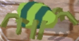 | のろのろと近づいてきて、目の前に蜘蛛の巣を張ります。 非常に弱いのでさっさと倒してしまいましょう。 |
ポテト・ナニナノ聖堂 ポテト・メートル回廊 |
| くもくん 赤 | 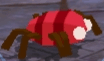 | 若干体力と攻撃力が上がったくもくん。行動も緑のくもと同 じなのでさっさと倒してしまいましょう。 | ポテト・マイル宮殿 ポテト・キロミリ通路 ラディス・おどろおどろ道 |
| ブロックくん 茶色 | 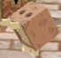 | パリンが近づくと、目の前に炎をはき出します。本当に目の前 で攻撃範囲が狭いので気にすることはないでしょう。 | ポテト・ナニナノ聖堂 ポテト・メートル回廊 |
| ブロックくん 緑 | 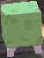 | 体力と攻撃力が上がり、攻撃範囲も広がったブロックくん。そ れでも、あまりおそれる必要はありません。 | ポテト・マイル宮殿 ポテト・キロミリ通路 |
| かぼちゃん 黄緑 | 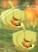 | パリンが近づくと炎を放ってきます。そこそこ攻撃範囲が広いの で注意しましょう。 | ラディス・おどろおどろ道 |
| かぼちゃん 桃色 | 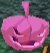 | 腐ったかぼちゃん(嘘)。体力と攻撃力が上がり、攻撃範囲も広が りました。しかし、相変わらず動きが遅いので落ち着いて倒しましょう。 | ラディス・大蛇のけもの道 |
| ひとくいそう 黄色 | 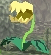 | パリンが近づくと、口から種をはき出します。一応、移動もできる ので注意が必要です。 | ラディス・おどろおどろ道 |
| ひとくいそう 朱色 | 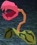 | パリンが近づくと、口から種をはき出します。攻撃範囲は黄色と変わ りませんが、威力が上がっているので注意しましょう。 | ラディス・大蛇のけもの道 ラディス・こうもりの隠れ家 |
| どんぐり 茶色 | ぴょんぴょんとはねながら、口から炎をはき出します。炎は攻撃範囲 が狭い代わりに有効時間が長いので注意しましょう。 | ラディス・にぎやか森の細道 | |
| どんぐり 赤 | 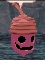 | 基本的に茶色と行動は変わりません。ただし、攻撃力が上がっている ので注意してください。 | ラディス・こうもりの隠れ家 |
| ぽむ 青 | 何かしらの目的で存在するこのモンスター。ゲーム中最弱です。 | ポテト・メートル回廊 ラディス・にぎやか森の細道 |
|
| ぽむ 赤 | 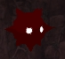 | 色が変わっただけで、何も変わっていないぽむ。 | ラディス・大蛇のけもの道 スピナ・くらやみ空洞 ピメント・ドラゴンズ・バック ピメント・ヘブンズヘルドヒル 大空洞・アメジストロード |
| 名前 | 画像 | 行動 | 出現場所 |
| こうもりさん 青 | こうもりらしく空を飛び、パリンを発見すると近づいてビームを 放ってきます。動きが遅いので落ち着いて対処しましょう。 | スピナ・ワラビ岩の洞窟 スピナ・忘れ石の洞穴 |
|
| こうもりさん 赤 | 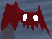 | 動きも遅く、攻撃も青と全く変わりません。一応、体力が上がっ ているみたいです。 | スピナ・さわがし岩窟 スピナ・くらやみ空洞 |
| 毒キノコ ピンク | 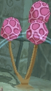 | 常に周りに毒ガスをまき散らすキノコです。移動しないので、 遠くから攻撃するもよし、対策をしてから接近戦で倒すもよし。 | スピナ・ワラビ岩の洞窟 スピナ・忘れ石の洞穴 大空洞・サファイヤライン |
| 毒キノコ 緑 | 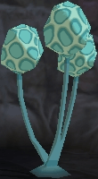 | ガスの威力と体力が上がったキノコ。毒ガス対策をすれば、 ただの岩と変わりません。 | スピナ・さわがし岩窟 スピナ・くらやみ空洞 ピメント・ヘブンズヘルドヒル |
| トカゲさん 朱 | 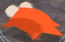 | 動きが遅い代わりに、体力が高く広範囲の炎を放ってきます。 威力も高いので遠距離からの攻撃をした方が無難です。 | ピメント・フェアリーズネスト ピメント・スカイ・ステップス |
| トカゲさん 緑 | 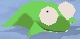 | 朱以上に体力も攻撃力も上がりました。しかも、攻撃範囲も 広がっておりたまったもんじゃありません。 | ピメント・ドラゴンズ・バック ピメント・ヘブンズヘルドヒル |
| ハチ ノーマル | 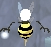 | 一説にはファントムという説もありますが、一応ふつうの
モンスターとして扱います。 空中を移動して、時々針をとばしてきます。たいした驚異で はないので早めに倒してしまいましょう。 |
ピメント・フェアリーズネスト ピメント・スカイ・ステップス |
| ハチ レッド | 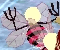 | 体力と攻撃力が上がったハチです。それでもさほど強くな いので早めに倒してしまいましょう。 | ピメント・ドラゴンズ・バック ピメント・ヘブンズヘルドヒル |
| 動くIC ブルータイプ | 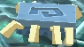 | 精密部品のくせに自分がショートして攻撃してくる訳の変 わらないモンスター。背が低いのでなかなか攻撃がしづらいです。 | 大空洞・サファイヤライン |
| 動くIC オレンジタイプ | 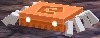 | 相変わらず自らショートしてくる変な攻撃を仕掛けてきま す。攻撃力と体力が上がっているので注意が必要です。 | 大空洞・ルビークレイブ |
| 水辺のオバケ | 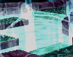 | パリンが近づいてくると水中から全身を出して攻撃してき ます。攻撃するまでの動きは遅いのですが、確実に攻撃は仕掛けて くるのでヒット&アウェイを貫きましょう。 | 大空洞・クリスタルウェイ 大空洞・サファイヤライン 大空洞・ルビークレイブ 大空洞・アメジストロード |
| 名前 | 画像 | 行動 | 出現場所 |
| ファントム | そのほか |
| 概要 | 情報 | ボス戦 |
| 攻略チャート | ステージ一覧 | 敵キャラ一覧 |
| アイテム一覧 | 行動パターン | GURUMIN 攻略へ |